ありがた山/静岡県御殿場市
霊峰富士の裾野、御殿場にある時之栖（ときのすみか）。
温泉やホテル、ショッピングその他諸々が集まる複合観光施設で、多くの観光客でごった返している。
そんな一画に訪れる人もまばらなエリアがある。それが千三百地蔵ありがた山だ。
このありがた山、時之栖の観光アトラクションの一部なのだが、温泉や土産屋などと比べると人気は推定1万分の1。
まあ、観光といえば温泉にショッピングついでにエステ、てな御時世。致し方あるまい。
参拝、秘宝館、女体盛りの昭和観光オプション3点セットと比べると隔世の感すらある。
で、入口はこんな感じ。
ちなみに東京都稲城市にあるありがた山とは（多分）関係ないす。
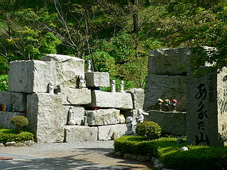 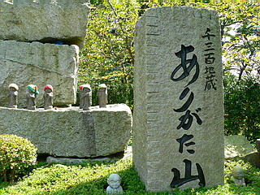
切り出された御影石の原石がドカドカ積んであって、石切り場みたい。
どうやらこれがゲート（山門？）替わりのようだ。
この時点で風呂上りで浮かれてフラフラと来てしまった観光客も無言でターンバック。
ひるまずに進みましょう。
ちょっとした隙間スペースにはお地蔵さんがちらほら。
中にはこんなカラフルな地蔵レンジャーもいるので油断ならない。
コドモを鬼から守る正義の味方、賽の河原の平和は任せたぞ！
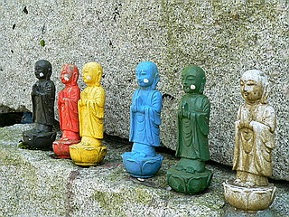
入るなり早々気になったのがお地蔵さんの足元にあるプレート。
見れば個人の名前が書かれている。
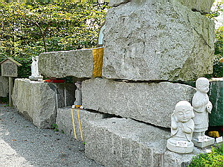 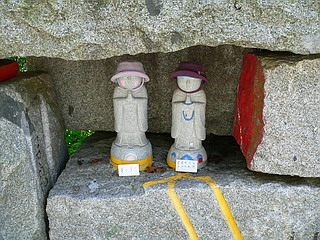
つまりココに来てお気に入りのお地蔵さんのオーナーになれる、ということなのだろう。
金額を見ると、一般のお寺などで勧進している石仏に比べかなり安い。
どのくらいかというと同じ敷地にあるレストランのバイキングより安いのだ。
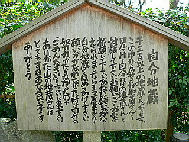
賽の河原で子供を救う菩薩であるお地蔵さんもここでは自分地蔵と呼ばれ「とてもすなおな良い子」になっちゃっている。
地蔵の存在が仏教から民間信仰に移行し、路傍の石仏になり、21世紀の現在には赤ちゃんみたいな扱いになってしまったようだ。
繰り返すが、この施設はお寺でもなければ信仰施設でもない。
あくまでもエステや温泉と同じ来訪者の癒し効果を目的としたアトラクションなのだ。
つまりここにある地蔵は仏教が意味するところの地蔵菩薩ではない。
従って幼子を救う菩薩が人間に「良い子」扱いされちゃうという逆転現象が起こっても「地蔵菩薩を舐めんなよおぅおぅ！」という批判は意味を成さないのである。
ここでのお地蔵さんはあくまでもワンニャンに極めて近い「カワイイ」存在なのだろうから。
いずれにせよ現代の日本のお地蔵さんに対する気分のようなものを象徴しているように思えてならない。
…ま、レンジャー扱いよりはマシですか…
私の心の中の葛藤をよそに遊歩道沿いには次から次へとお地蔵さんが現れる。
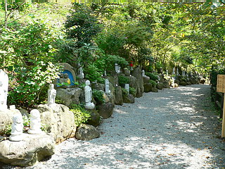 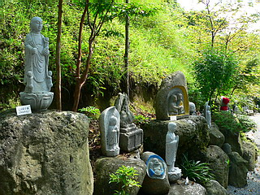
プレート（里親）がついているお地蔵さんが多いがプレートのないお地蔵さんもたくさんある。
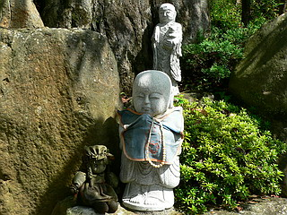 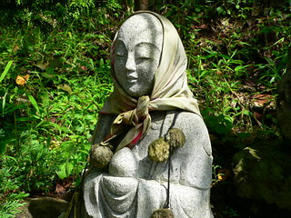
オーナーになられた方は思い思いのアクセサリーでカスタマイズをしていらっしゃる。
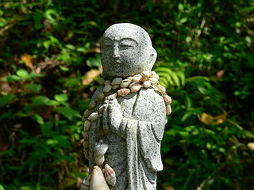
貝？
中には造りがテキトーなものや未完成なものも。
当然といえば当然だが、この辺のお地蔵さんのプレートには名前が入ってませんでした…
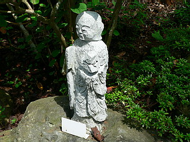 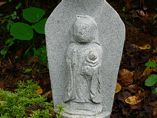
これも売り物…じゃなくて？
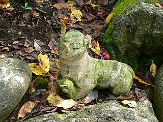
てな具合に一体一体お地蔵さんを見ていると六地蔵に突き当たる。
この六地蔵だけは屋根がかかっており特別なお地蔵さんのようだ。
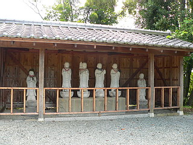
コレでおしまいかと思いきやさにあらず。
六地蔵のところから道はＵターン状にまだまだ続いていたのだ。
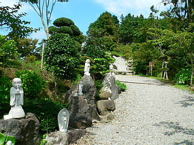
先ほどの普通のお地蔵さんと違い若干オリジナルっぽい石像が増えてきた。
背後には富士の山頂が見えるナイスなロケーション。
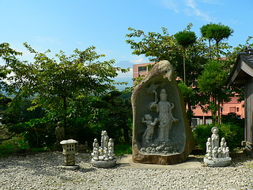 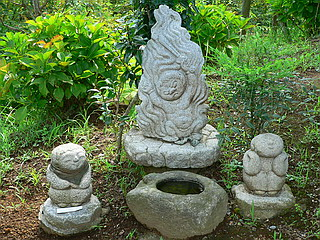
これは小僧の神様だろうか？
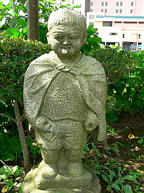
そしてその先に現れたのは…
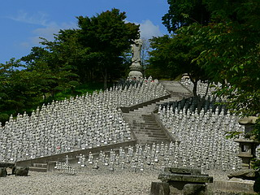
ずらりと並んだお地蔵さん！
子安、合掌、延命などのお地蔵さんが等間隔に並んでいる様は迫力満点だ。
こりゃ富士山どころの騒ぎじゃないぞ（オレ的には）！
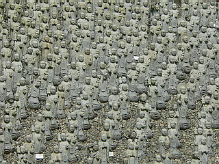 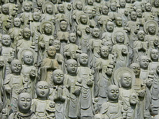
その頂上には大きな薬師サマ、だろうか。
皆さんの健康と益々の御発展を見守っている。
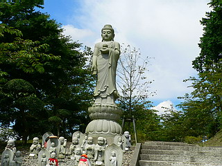
頂上から見下ろしたお地蔵さんの山。
…見守っているのは富士の裾野とお地蔵さんの後頭部でした…
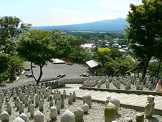
ここのお地蔵さんもオーナー制度を取り入れているようで、ちょっぴり自分らしさに酔っちゃった感じのカスタマイズが施されたお地蔵さんが何体かあった。
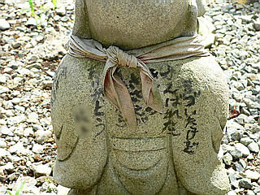
レジャー施設の中にあるお地蔵さんだからこそ託せる願いや思いの存在をひしひしと感じる。
従来の仏教や古くからの民間信仰とはまた別の役割を持つ新しい地蔵の姿が生まれつつあるのかもしれない。
それは現代人の趣向にマッチしたライトでファンシーでフリーな地蔵観といっていいだろう。
なんたって「すなおな良い子」、そしてマッサージよりリーズナブルなのだから…
時之栖の公式サイトはこちら。
余談ですがここの温泉、八熱地獄並みのサウナと八寒地獄並みの水風呂が凄く良かったです。
情報提供は辞烈亭亭主さんです
2006.09.